STAWY JAK ZA MŁODU? TERAZ TO MOŻLIWE!
Materiał opublikowanyANNA PIOTROWSKA: DZIĘKI TEMU NAPRAWIŁAM STAWy I ZNOWU MOGĘ ZROBIĆ SZPAGAT!
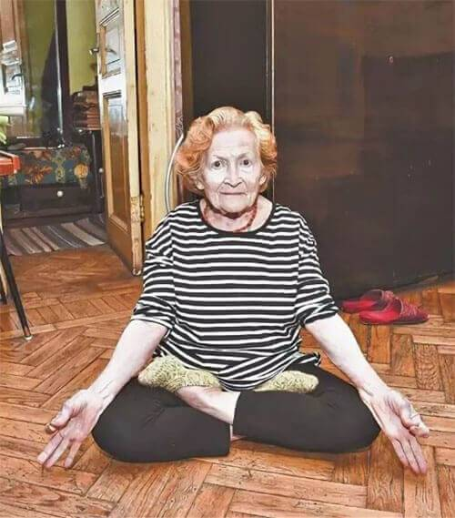Dzisiaj opowiemy Wam ciekawą historię. Cuda się czasem zdarzają. To prawda, że za nimi często stoją najnowsze osiągnięcia nauki. Nasz korespondent przeprowadził wywiad z 80-letnią Anną Piotrowską, która od dawna choruje na artrozę stawów kolanowych, a teraz dzięki nowoczesnej kuracji znów może zrobić szpagat i usiąść w pozycji lotosu! Starsza kobieta wygląda teraz świetnie i zgodziła się udzielić wywiadu, by wykazać się elastycznością oraz opowiedzieć o swoim doświadczeniu!
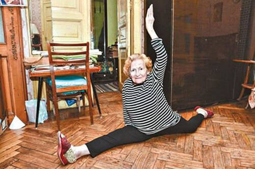Rodzinnym miastem Anny Piotrowską jest Katowice. Jest typową polską emerytką. Urodziła się w czasie wojny. Ukończyła studia medyczne. Pracowała jako sanitariuszka w wojsku, uczestniczyła w wydarzeniach czechosłowackich w 1968. Posiada nagrody rządowe. Tak się złożyło, że Anna zrezygnowała z wojska, osiedliła się w Krakowie i poszła do pracy do warsztatu wypalania w cegielni. Robiła tam wszystko. Cegły były wypalane w piecach, więc trzeba było ręcznie pchać wózki z gotowymi materiałami. Praca w zimnie, w strasznych przeciągach, gdy piec płonie za plecami. Z przodu było -15°C, a z tyłu +60°C.
Służba w wojsku i ciężka praca jakiej się podjęła, źle wpłynęły na zdrowie kobiety. Pojawiły się wszelkiego rodzaju stany zapalne, które szczególnie dokuczały stawom. To wszystko przyczyniło się do tego, że Anna nabawiła się artrozy stawów kolanowych.
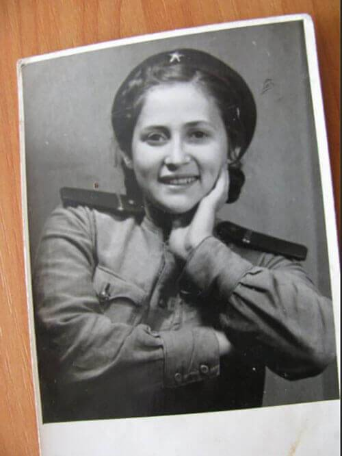„Choroba rozwijała się bardzo szybko. Próbowałam z nią walczyć. Chodziłam do specjalistów, póki jeszcze dałam radę, regularnie brałam przypisywane preparaty, piłam różne wywary, wcierałam maści. Jednak to wszystko na nic, bo choroba postępowała. Każdy krok sprawiał mi ogromny ból, doprowadzając mnie do łez. Poddałam się w wieku 70 lat.” – mówi Anna.
"Nie miałam już siły, aby dalej tolerować tę mękę” - przyznaje emerytka naszemu korespondentowi. "Wolałam umrzeć niż dalej żyć z tym bólem” – wyznaje.
Jako uczestniczka walk (otrzymała wiele orderów za udział w wydarzeniach w Czechosłowacji) zaproponowano jej wymianę stawów na protezy. Jednak nawet z dofinansowaniem od Państwa, koszt wymiany wynosił ponad 7 tysięcy złotych za jedną protezę.
"Nie miałam takich pieniędzy. A sama operacja była przerażająca. W wieku 75 lat to nie żarty. Zdecydowałam, że niech będzie tak, jak jest." - wspomina Anna Piotrowska.

A potem stało się to, co Anna Piotrowska nadal uważa za cud. Przypadkowo dowiedziała się od sąsiada, że w ich mieście pojawił się specjalista, który zajmuje się terapią chorób związanych ze stawami. Sąsiad mówił, że ma jakiś cudowny środek, który po jednej kuracji nie tylko łagodzi ból i stan zapalny, ale także regeneruje tkankę chrzęstną, przywracając stawy do pierwotnego, zdrowego stanu.
"Natychmiast zadzwoniłam do mojej córki. Mieszka w Warszawie. Przyjechała, skontaktowała się z tym specjalistą, a on zgodził się mi pomóc" - wspomina Anna Piotrowska.
Po rozmowie z nim, uwierzyłam, że to może mi pomóc. Już po 4 tygodniach stosowania tego środka mogłam wstać z wózka inwalidzkiego i sama pójść do sklepu. Po sześciu tygodniach moje stawy okazały się zdrowe. Co potwierdziły badania RTG.
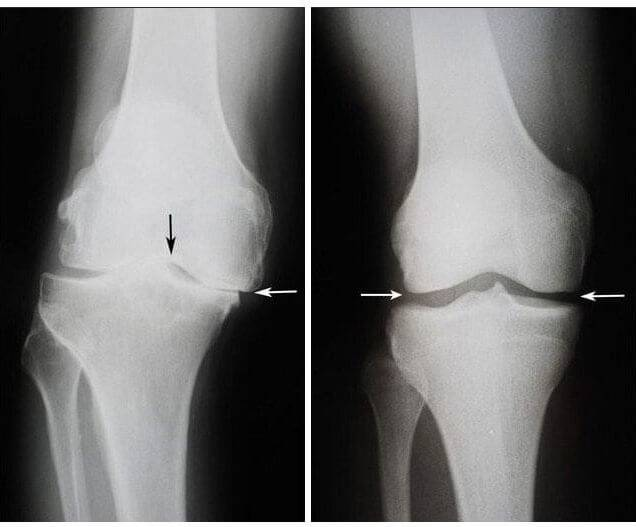Po lewej: zdjęcie RTG prawego stawu kolanowego Anny w wieku 75
lat. Tkanka chrzęstna jest prawie całkowicie zniszczona. Zalecenia lekarzy - wymiana stawu na
protezę.
Po prawej: zdjęcie rentgenowskie prawego stawu kolanowego Anny po kuracji.
ALE TO NIE KONIEC HISTORII!
"Wiesz, po kuracji poczułam, że moje nogi są tak samo zwinne i silne jak w młodości, kiedy służyłam w wojsku! I zaczęłam ćwiczyć gimnastykę, a nie robiłam tego od czterdziestu lat. Zaczęłam od przysiadów i innych prostych ćwiczeń. Miesiąc później zaczęłam skakać na skakance.”
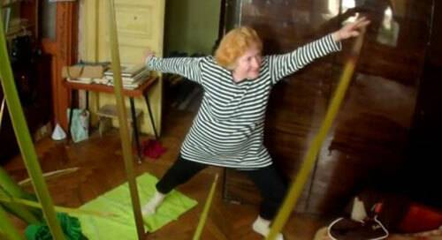
"A potem postanowiłam poćwiczyć szpagat. Miesiąc ćwiczyłam i udało mi się! W kolanach nie ma bólu. Stawy są jak nowe! Jestem bardzo wdzięczna mojemu specjaliście".
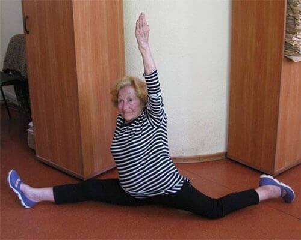
OD REDAKCJI:
Poznaliśmy nazwisko specjalisty, który pomógł emerytce. Okazał się nim Anatol Edwardowicz, profesor z trzydziestoletnim praktycznym stażem pracy. Postanowiliśmy się spotkać z Edwardowiczem, aby opowiedział nam nieco więcej o swoim środku.
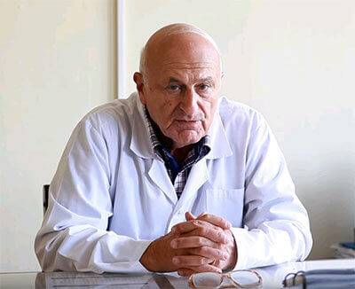 Anatol Edwardowicz
Założyciel Nowoczesnej kinezyterapii-alternatywnej metody terapii chorób przewlekłych i urazów układu mięśniowo-szkieletowego.
- Profesorze, proszę powiedzieć nam więcej o środku stosowanym przez Panią Anną.
- To . Całkowicie naturalne kapsułki. Ich składu nie można odtworzyć syntetycznie. Naukowcy nie byli jeszcze w stanie stworzyć innego środka o podobnym działaniu. Jest produkowany tylko w Polsce i wydano 1.3 miliona dolarów na opracowanie jego receptury.
- Jak działają te cudowne kapsułki?
- Nie ma tu żadnego cudu, sama nauka. Głównym składnikiem produktu jest hydrolizat kolagenu, który jest niezbędną substancją budującą nasze stawy i kości. Jego niedobór prowadzi do stanów zapalnych i powoduje choroby stawów. Jego głównym zadaniem jest budowanie tkanki łącznej, stawów, chrząstki i ścięgien. Nie ma nic równie skutecznego w przywracaniu tkanki chrzęstnej stawu. Ponadto w produkcie jest zawarty kwas hialuronowy i cynk, które hamują stan zapalny, dbają o odpowiednie nawilżenie stawów i chronią przed utratą tkanki chrzęstnej. Ostatnim składnikiem jest kadzidłowiec, który jest skuteczną rośliną o działaniu przeciwreumatycznym, łagodzi ból i poprawia ruchliwość stawów.
- Brzmi imponująco. Wyjaśnij nam, co to oznacza dla zwykłych ludzi z chorobami stawów?
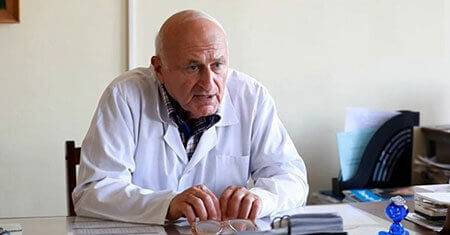
- Oznacza to, że średniowieczna medycyna należy już do przeszłości i możesz pokonać swoje choroby w domu w ciągu miesiąca lub dwóch. , wspomaga regenerację stawów już na poziomie komórkowym. Eliminuje przyczynę samego bólu i przywraca stawy do pierwotnego, normalnego stanu. Pacjent nie tylko pozbywa się objawów, ale całej choroby.
Wystarczy jedna, miesięczna kuracja - a ból stawów nigdy więcej nie uprzykrzy Ci życia.
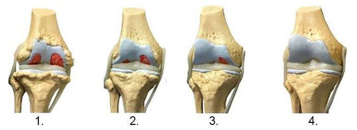1. Brak składników nawilżających stawy. Zniszczona tkanka
chrzęstna.
2. Odbudowa tkanki chrzęstnej stawu po 2 tygodniach przyjmowania .
3. Odbudowa tkanki chrzęstnej stawu po 3 tygodniach stosowania preparatu.
4. Zdrowy staw po zakończonej kuracji.
— Poniższe zdjęcie rentgenowskie przedstawia typowy obraz rekonstrukcji stawu kolanowego.
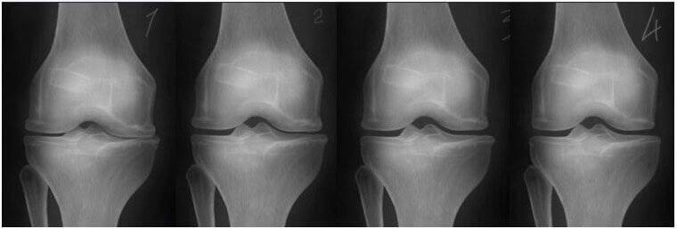— oddziałuje bezpośrednio na przyczynę problemu stawowego, środek nie tylko usuwa objawy, ale także przywraca zniszczonej tkance jej prawidłowe funkcje, dzięki czemu uzyskujemy całkowitą eliminację przypadłości.
— POWIEDZIAŁEŚ, ŻE DZIĘKI KURACJI MOŻNA ODBUDOWAĆ STAWY JUŻ W 3-4 TYGODNIE. GDZIE WIĘC MOŻNA NABYĆ TEN WSPANIAŁY ŚRODEK?
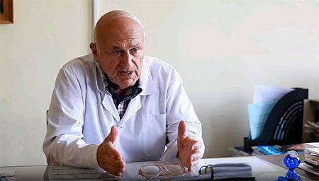— Cieszę się, że padło to pytanie.
Wspólnie z polskim zespołem lekarzy doszliśmy do porozumienia, że produkt będzie dostępny na oficjalnej stronie internetowej. Ponieważ jesteśmy niezależni, nie jesteśmy powiązani z żadną firmą farmaceutyczną i możemy dystrybuować produkt przez Internet.
Każdy mieszkaniec Polski może wziąć udział w programie, dzięki któremu Prostavin kupisz z dostawą na terenie kraju z rabatem 54,2%!
Ta promocja jest dla nas ważna, ponieważ chcemy mieć pewność, że Twoje stawy są pod pełną opieką najlepszego specjalisty w tej dziedzinie, czyli środka . Pamiętaj, że jedynie regularne i systematyczne stosowanie , może przywrócić ich pełną ruchliwość oraz elastyczność.
Jest tylko jedno „ale”. Promocja trwa od: do włącznie.
— ZBLIŻAMY SIĘ DO KOŃCA NASZEJ ROZMOWY. SERDECZNIE DZIĘKUJĘ ZA WYWIAD! ZECHCESZ MOŻE POWIEDZIEĆ NASZYM CZYTELNIKOM KILKA SŁÓW PODSUMOWUJĄCYCH?
— Oczywiście. Chciałbym zwrócić Państwa uwagę na ogromną ilość podrabianych produktów, które nie wykazują tak dobrego działania. Po prostu z reguły najpopularniejsze i najskuteczniejsze środki są podrabiane. Z racji tego, że cieszy się coraz większym zainteresowaniem, spodziewamy się, że niedługo powstaną niemalże identyczne produkty konkurencji. Miałem już do czynienia z podrobionymi środkami, dlatego namawiam wszystkich do kupowania tylko od zaufanych sprzedawców.
Wystarczy, że wypełnisz poniższy formularz, a nasz konsultant oddzwoni w celu omówienia szczegółów zamówienia.